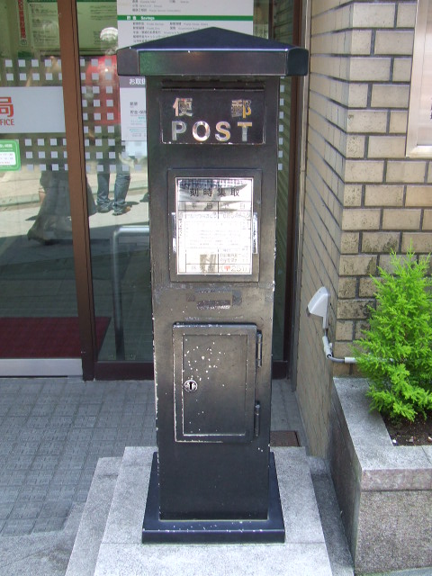

Marketing of KitKats in Japan!
Marketing for Kit Kats in Japan is believed to have benefited from the coincidental false cognate with "Kitto Katsu", a phrase meaning "You will surely win" in Japanese. Some market research has shown that the brand is strongly correlated to good luck charms, particularly among students ahead of exams.
Kit Kat's "Lucky Charm" advertising campaign in Japan won the Asian Brand Marketing Effectiveness Award in 2005.
Nestlé and the Japan Post launched a campaign in 2009, allowing people to write messages and mail the chocolate bars from 20,000 post offices. The special packages included a space to write a message of encouragement and affix a stamp. The promotional packages were sold out within a month.
The campaign won the Media Grand Prix in 2010's Cannes Lions International Advertising Festival.

